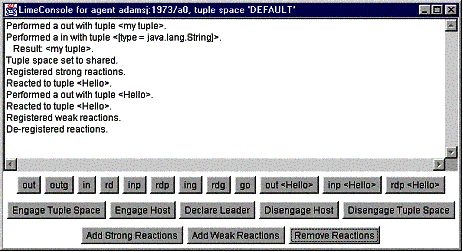
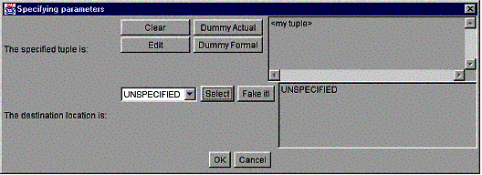
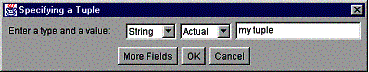
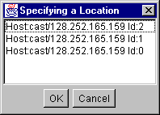
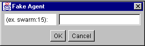
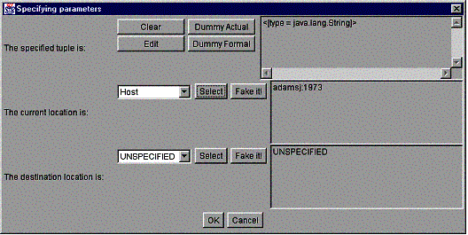
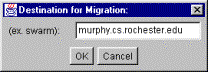
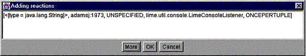
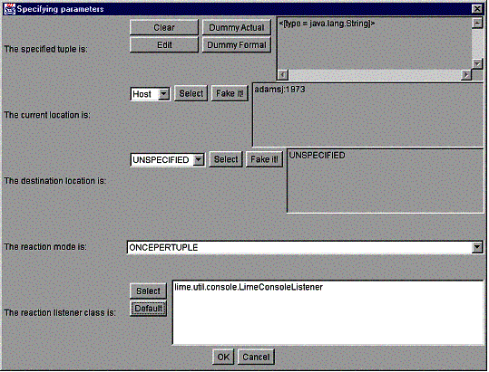
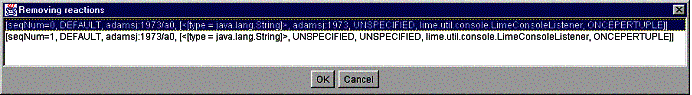

When the Lime console is generated, the following window is displayed on the screen:

A major portion of the console is occupied by the message area, where brief notifications of the operations performed are displayed. The lower area mirrors most of the operations available on the Lime tuple space associated with the console, namely:
out
inserts a tuple in the Lime tuple space.
outg
inserts a set of tuples into the Lime tuple space.
in withdraws a tuple
from the Lime tuple space, and blocks if no tuple is found.
rd reads a tuple from the
Lime tuple space, and blocks if no tuple is found.
inp withdraws a tuple from the Lime tuple
space, returning null if the tuple is not found.
rdp reads a tuple from the Lime tuple space,
returning null if the tuple is not found.
ing Removes all tuples matching a specific
pattern from the Lime tuple space, returning null if the tuple is
not found.
rdg reads all matching tuples from the Lime
tuple space, returning null if none are found.
go sends a mobile agent to a specified
destination, if the agent is a mobileagent (as opposed to a stationary
agent).
out(Hello) writes a tuple containing the string
"Hello" to the tuple space. (useful for debugging)
inp(Hello) removes a tuple with the pattern "Hello"
from the tuple space, returning null if none is found. (useful
for debugging)
rdp(Hello) reads a tuple with the pattern
"Hello" from the tuple space, returning null if none is
found. (useful for debugging)
Engage Tuple Space engages
the Lime tuple space, i.e., allows sharing with other agents.
Disengage Tuple Space
disengages the Lime tuple space, i.e., makes it private and prohibits sharing
with other agents.
Engage Host engages the
host. All misplaced tuples contained in shared tuple spaces will be
transferred.
Disengage Host disengages the
host. All the tuple spaces belonging to agents on this host will be no longer
visible to the rest of the system.
Declare Leader the
bootstrapping mechanism used by Lime to start a Lime community.
Add Strong Reactions
registers a set of strong reactions with the Lime tuple space.
Add Weak Reactions
registers a set of weak reactions with the Lime tuple space.
Remove Weak Reactions
deregisters a set of weak reactions from the Lime tuple space.
Remove Strong Reactions
deregisters a set of strong reactions from the Lime tuple space.
When pressing one of the buttons for an access operation, a dialog similar to the following is displayed:

The dialog above is for an out operation. The first portion of
the dialog is concerned with specifying the tuple to be written (or
read/removed). The buttons Dummy Actual and Dummy
Formal are provided as a convenience for testing, and insert the tuples
["Hello"] and [<java.lang.String>] respectively,
where the latter is a template that matches any String.
The Clear button simply clears the contents of the textfield,
while the Edit button allows for editing an arbitrary tuple and
displays the following dialog:

Tuples are created field by field. Only String and
Integer objects are presently supported by the console, and they
can be selected using the first pull-down listbox. The second pull-down
listbox determines whether the field is an actual or a formal, and the
textfield allows for entering the value of the field. Additional fields can be
entered by pressing the More Fields button. Tuple editing is
completed by pressing the OK button, which closes the dialog and
displays the content of the edited tuple in the access operation textfield.
The second portion of the dialog for the out operation above,
is occupied by the specification of the destination locations for the
tuple. The default choice is UNSPECIFIED, which corresponds to
invoking the out(lights.interfaces.ITuple) method without
specifying a location parameter. To accept this choice just press the
Select button and the UNSPECIFIED value will be
displayed as the value of the destination location. However, it is possible to
specify an agent identifier as the destination location in two different ways:
Agent from the pull-down listbox and press the
Select button. If there is currently only one agent in the
system, the identifier of that agent will be automatically displayed in
the destination location field. Otherwise, a dialog will be displayed,
such as

allowing selection of an agent identifier from the list.
Fake it!
button. Given the semantics of Lime, this tuple will be a misplaced
one. The Fake it! button will display the following dialog

that allows to enter an arbitrary agent identifier. Currently, the format for agent identifiers is the symbolic name of the host where the agent has been created, followed by a colon to indicate the port on which the LimeServer was launched, followed by a slash and the number of the agent (defined as an increasing number for each new additional agent starting with 0) (e.g., swarm:1973/0).
Similar dialogs are displayed for the other access operations. The buttons and
choices available are automatically configured according to the semantics of
the operations. Thus, for instance, the in operation has a richer
interface

which allows the specification of a destination location where insertion of an
UNSPECIFIED value is automatically prevented. On the other hand,
it is possible to specify a host as the value of the current location, with
steps similar to the selection of an agent described before. Thus, pressing
Select will either automatically insert the field of a host, if
it is the only one present in the system, or display a list of hosts present
in the system. The Fake it! button allows the an agent or host
not present to server as either the current or destination field of the tuple
pattern, based on the value of the drop down box to the left of the Fake
it! button.
The Lime console also has a go button. This button has no
effect if the agent extends StationaryAgent, however if the agent
is a mobile agent extending MobileAgent, go will send the
interactve agent to the specified LimeServer loacation. The
dialog box accepts a hostname:port specification in the following
interface (note: the default port for a µCode server is 1968):

Engagement operations do not display any additional dialog boxes. They simply cause the corresponding operation to be invoked and then display a brief message in the console.
Reactive operations, on the other hand, display a dialog that is richer
than the one used for access operations. The Add Strong Reactions
button, for instance, displays a dialog that is similar to the following:

This dialog contains the set of reactions that will be registered with the
Lime tuple space. The figure shows one. Of course, initially the list is
empty. Pressing the More button generates the following
additional dialog that allows the specification of one reaction at a time:

The look and feel of this dialog is similar to the one used for access
operations. However, there is an additional field that allows the specifiation
of the reaction listener that is associated with the reaction. The
lime.util.console package provides a default listener,
lime.util.console.LimeConsoleListener, whose behavior is simply
to display in the message area the message Reacted to followed by
the tuple the listener reacted to. This is the listener that gets selected by
pressing the Default button on the dialog box. However, as
explained in the documentation for LimeConsoleListener, the programmer can define
subclasses of this listener that provide alternative behavior. A specific user
listener can be selected using the file dialog that is displayed when the
Select button is pressed. The .class containing the
bytecode for the listener must be selected.
Similar dialog boxes exist for the installation of weak reactions from
the Add Weak Reaction button. The most notable difference is
that the UNSPECIFIED option is available as a current location
for the pattern.
The Remove Weak/Strong Reaction buttons allow the user to
select from the previously installed reactions the set to be disabled. From
the dialog box on or more reactions can be selected:
